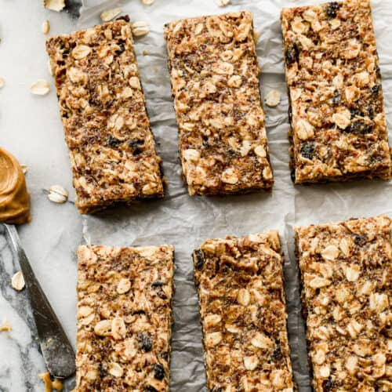

Healthy Protein Bar Recipe

Description
No Bake – No heating up the house, and only takes 10 minutes to throw the ingredients together and put in the fridge.
Healthy – Nothing artificial here. These bars are filled with normal pantry ingredients and sweetened with honey.
Taste Delicious – I’ve had one to many unappetizing protein bars in my life, so I’m all about making them from scratch, with ingredients I recognize, and they taste wonderful!
Ingredients
- 1 ball Easy Thin Crust Dough
- ½ cup Easy Pizza Sauce
- 1/2 yellow bell pepper
- 1/2 red bell pepper
- 1/4 medium red onion
- 1 garlic clove
- 1 tablespoon olive oil
- ½ teaspoon dried oregano, plus more for garnish
- ½ tablespoon capers, drained
- ¼ cup grated Parmesan cheese
- ½ cup baby arugula
- Kosher salt
- Olive oil
- Semolina flour or cornmeal, for dusting the pizza peel
Steps
- Mix all ingredients until well combined. Press into an 11×7 inch pan (or similar size—you could use a 9×13 pan, but not press them all the way to one side). Refrigerate for at least 1 hour before cutting into bars.
- Before cutting, press them down and together tightly. Store bars in an airtight container in the fridge for up to 2 weeks.